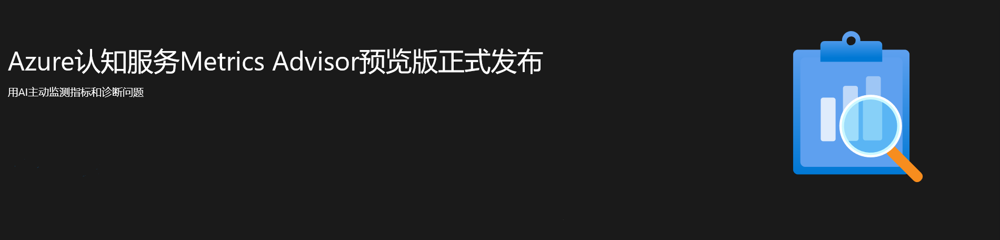
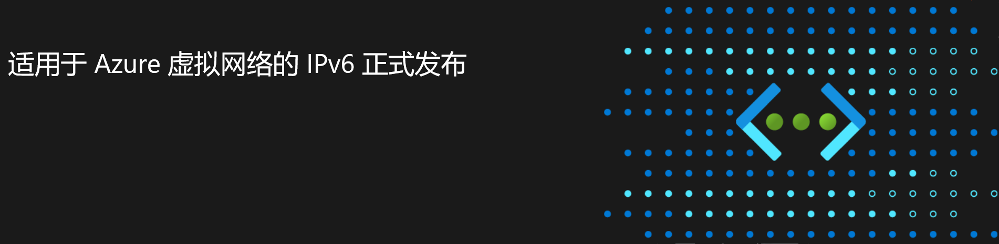
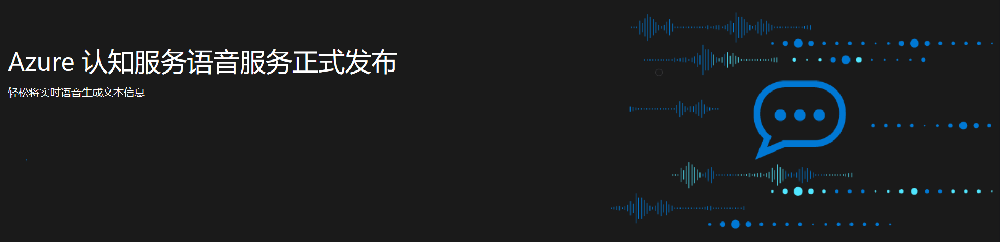
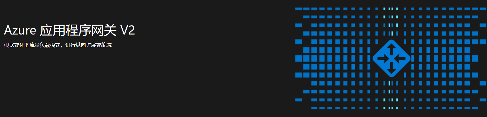
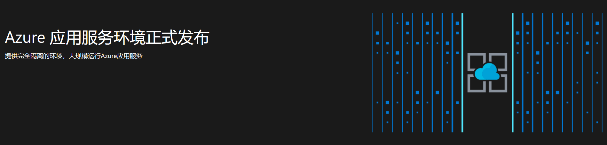
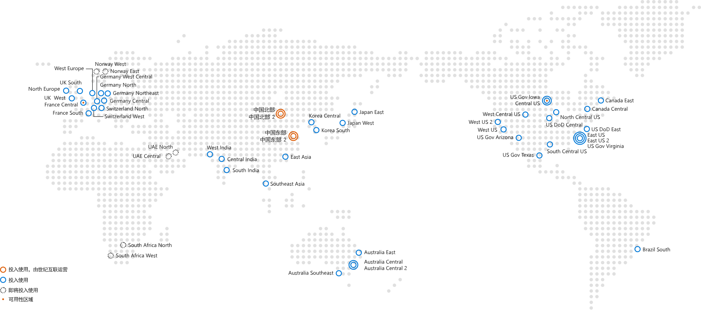

登录Azure门户
认识 Azure
什么是 Azure?
了解 Azure 服务基础知识
中国版 Azure（世纪互联运营）vs. 全球版 Azure
哪种公有云最适合你？
Azure 可用服务
Azure 中国可用服务列表
产品
AI
认知服务
添加智能API功能以启用上下文交互
人脸识别
检测、识别、分析、组织和标记照片中的人脸
计算机视觉
从图像中提取可操作信息
内容审查器
计算机辅助内容审查器 API以及用于图像、文本和视频的人工审查工具
文本分析
检测文本中的情绪、关键短语和语言
文本翻译
通过简单的 REST API的调用即可轻松进行实时文本翻译
语言理解
教会应用理解用户的指令
语音服务
将语音转换为文本，将文本转换为自然语音
Metrics Advisor
主动监视指标和诊断问题的 AI 分析服务
Azure 认知搜索
用于移动和 Web应用开发的 AI支持的云搜索服务
机器学习
构建和训练模型，并将其从云端部署到边缘
Azure Stack
Azure Stack
Azure Stack 是 Azure的扩展 —将云计算的敏捷性和创新性带入您的本地环境，实现唯一的混合云，从而允许您在任何地方构建和部署混合应用程序。我们汇集了最佳的边缘和云，在您环境中的任何地方提供Azure服务。
安全性
密钥保管库
保护并保持控制密钥和机密
Azure Active Directory
同步本地目录并启用单一登录
应用程序网关
在 Azure中生成安全、可缩放且高度可用的Web 前端
Azure Web应用程序防火墙
在 Azure中生成安全、可缩放且高度可用的Web 前端
VPN网关
创建完全的跨界链接
安全中心
跨混合云工作负荷统一安全管理并实现高级威胁防护
Azure 信息保护
随时随地更好地保护敏感信息
Azure Active Directory 域服务
用于虚拟机和目录感知应用程序的域服务
标识
Azure Active Directory
同步本地目录并启用单一登录
Azure Active Directory B2C
云中的客户标识和访问管理
多重身份验证
提高数据和应用的安全性，而不给用户添麻烦
Azure 信息保护
随时随地更好地保护敏感信息
Azure Active Directory 域服务
用于虚拟机和目录感知应用程序的域服务
存储
储存
持久的、高度可用的、高度可伸缩的云存储器
Blob 储存
适用于非结构化数据的基于REST 的对象存储
Azure Data Lake Storage
基于 Azure Blob存储构建的高度可缩放的安全Data Lake 功能
磁盘储存
支持虚拟机的永久性、安全磁盘选项
磁盘托管
用于 Azure虚拟机的永久且安全的磁盘存储
队列储存
根据流量有效缩放应用程序
文件储存
使用标准 SMB 3.0协议的文件共享
Date Box
用于向 Azure 的数据传输以及用于边缘计算的设备和解决方案
分析
SQL 数据仓库
弹性数据仓库即服务，具有企业级功能
HD insight
设置云 Hadoop、Spark、R Server、HBase和 Storm 群集
流分析
实时数据流式处理，可处理来自数百万台IoT 设备的数据
Power BI Embedded
在应用程序中嵌入完整交互式的可视化数据
Azure 分析服务
企业级分析引擎即服务
事件中心
从数百万个设备中接收遥测
数据工厂
轻松进行企业级规模混合数据集成
Azure 数据资源管理器
快速且高度可缩放的数据探索服务
管理工具
Azure 门户
在单个统一的控制台中生成、管理和监视Azure产品
Azure 顾问
个性化 Azure最佳实践推荐引擎
自动化
使用流程自动化来简化云管理
集成
服务总线
在私有云环境和公有云环境中连接
API 管理
安全、大规模地向开发人员、合作伙伴和员工发布 API
事件网络
实现大规模的可靠事件交付
计算
虚拟机
在几秒钟内预配好 Windows和 Linux 虚拟机
虚拟机规模集
管理并扩展到数千台Linux 和 Windows 虚拟机
应用服务
快速创建适用于 Web和移动的强大云应用
联网
CDN内容分发网络
广泛的覆盖可确保安全、可靠的内容交付
ExpressRoute
Azure 专用网络光纤连接
Azure DNS
在 Azure DNS 中托管 DNS 域
媒体
媒体服务
大规模编码、存储和流式传输视频和音频
迁移
站点恢复
安排私有云的保护和恢复
Azure 数据库迁移服务
简化本地数据库向云的迁移
容器
Service Fabric
在 Windows 或 Linux上开发微服务和安排容器
容器注册表
将 Docker专用注册表作为一流的Azure 资源进行管理
批处理
云规模的作业计划和计算管理
数据库
SQL数据库
托管关系SQL数据库即服务
SQL数据仓库
弹性数据仓库即服务，具有企业级功能
SQL Server Stretch Database
将本地 SQL Server数据库动态拉伸到 Azure
网站
Azure SignalR 服务
轻松添加实时 Web 功能
物联网
Azure IoT 中心
连接、监视并控制数十亿IoT 资产
Azure IoT 边缘
将云智能和分析扩展到边缘设备
Azure Cosmos DB
任何规模的分布式多模型数据库服务
移动
通知中心
从任何后端向任何平台发送推送通知
移动应用
构建和承载任何移动应用的后端
API应用
轻松生成和使用云API
开发人员工具
应用程序配置
用于应用程序配置的快速、可缩放的参数存储
价格
解决方案
案例与伙伴
案例研究
人们正在使用 Azure做着令人惊叹的事，来听听他们的故事吧
寻找合作伙伴
通过经验丰富的合作伙伴的帮助在云中启动并运行业务
文档
技术文档
技术文档
了解如何使用 Azure云服务构建和管理功能强大的应用程序；获取文档、示例代码、教程等
购买 + 计费
中国区购买 Azure 指南
了解不同渠道端到端的购买流程，及详细的指导说明
Azure 全球采购指南
为考虑使用 Azure海外服务的中国用户提供购买流程概述
中国区 Azure 计费文档
了解中国区 Azure订阅申请、账户管理、充值付款、帐单解读、发票索取等流程信息
博客
培训
支持
联系我们
在线申请，微信，论坛，总之有各种方式联系到我们
支持计划
看看 Azure究竟提供了哪些专业技能来提高你的工作效率
服务仪表盘
Azure 服务仪表报告
Azure市场
Azure Global/China
申请使用





了解更多
用手机浏览本页
技术文档
助你了解 Azure ，提高工作效率，
节省运营成本
案例研究
了解目前正在使用Azure解决方案的
案例及分析
最新公告
Azure 虚拟 WAN 正式发布
电子商务
数字媒体
备份和存档
大数据和分析
开发和测试
游戏
数字营销
电子商务
无论你销售的是什么产品，你都需要同时满足客户和业务需求的安全、可缩放电子商务解决方案。通过自定义产品和优惠吸引客户，安全快速地处理事务并专注于产品交付和客户服务。
了解更多
数字媒体
从优质视频内容的全球分发到指导员工和调用其参与度，再到联系客户和进行互动，均可使用媒体的力量来实现企业转变。快速构建和部署视频解决方案、按需扩展，并随时随地使用任何设备交付视频。
了解更多
备份和存档
保护驻留在任何位置的数据和应用程序，以避免成本高昂的业务中断或以满足符合性要求。安全地将本地备份存储和数据存档解决方案扩展到云，从而降低成本和复杂性，同时实现高效率和可伸缩性。
了解更多
大数据和分析
通过实时分析海量数据，从而提供更好的体验，并做出更好的决策。获取所需的见解以提供智能操作，从而增强客户互动、增加收入并降低成本。
了解更多
开发和测试
你将更快地提供更多功能 -保持使用最新的全套开发和测试工具，使你的团队以云速度进行协作和交付。通过可缩放的按需基础结构，根据你的要求快速创建一致的开发和测试环境。
了解更多
游戏
在此处构建全球游戏体验，通过安全的全球云和游戏专用服务创建和运行游戏 - 适用于各种规模和预算的 studio。
了解更多
数字营销
利用丰富、个性化的数字营销体验吸引全球的客户。快速构建和启动根据客户需求自动缩放的数字营销活动。凭借强大的数据分析，分析并提高活动的成效。
了解更多
为您推荐全能高效的 Azure 云产品
Azure Spring Cloud
联合 VMware 共同构建和运营的完全托管的 Spring Cloud 服务
0元/小时 起
专用链接
改进了 Azure 服务资源的安全性和路由
0.102元/小时 起
Azure SQL Edge
占用内存少、边缘优化的 SQL 数据库引擎，并内置 AI
0.0822元/小时 起
Azure Databricks
基于 Apache Spark
TM
的简便快捷的协作式分析服务
0.75元/小时 起
全部64个云产品
虚拟机
在几秒钟内预配好
Windows 和 Linux 虚拟机
0.11元/小时 起
云服务
创建高度可用且可
无限缩放的云应用程序和 API
0.11元/小时 起
看看谁在使用 Azure
Azure 技术遍布全球
在中国，由世纪互联运营，数据中心 BGP 接入，支持异地复制

未经备案的域名可能会被屏蔽
关于自查整改“翻墙”行为的通知！
互联网信息服务单位网络安全责任告知书

![]()
![]()